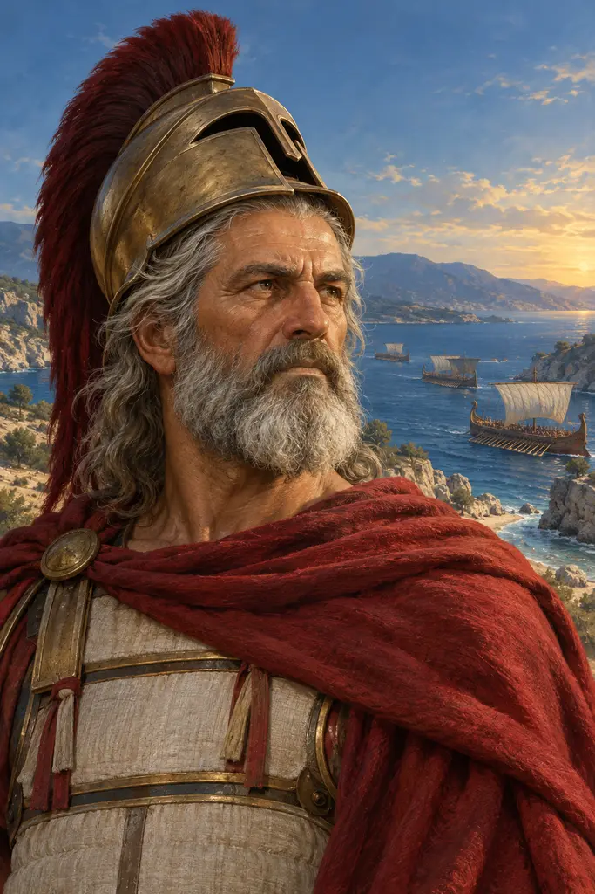
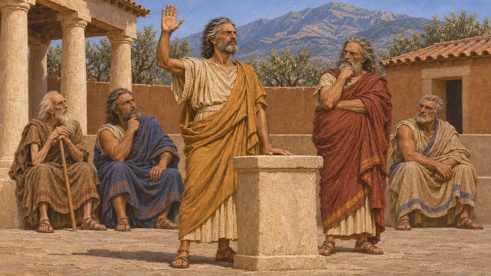
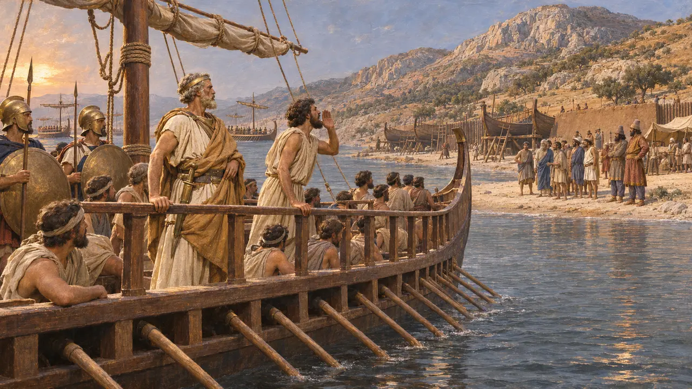
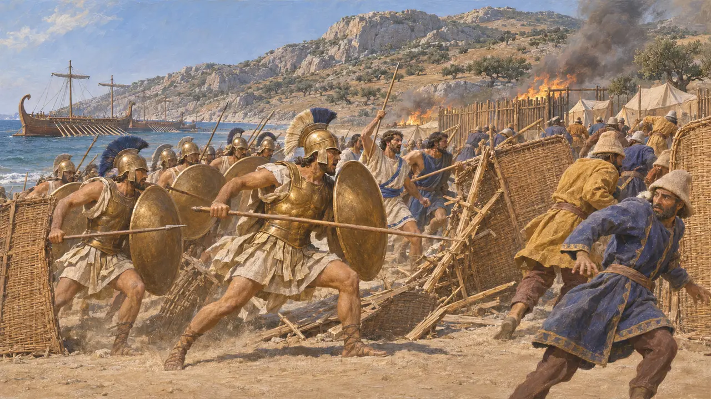
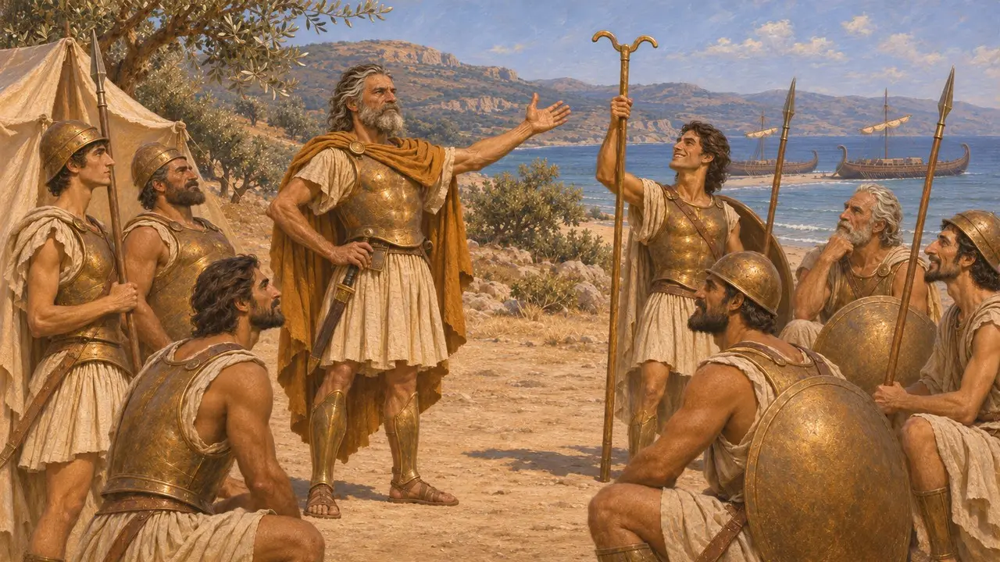
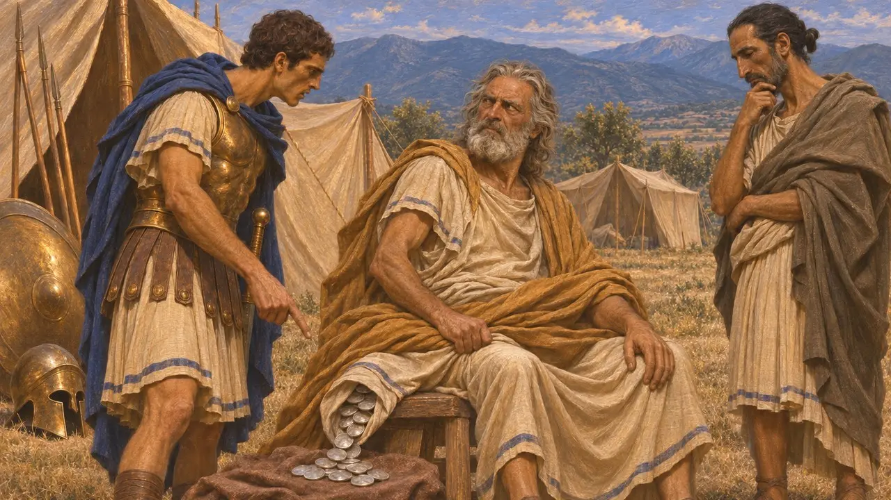

Леотихид
Царь Спарты из рода Еврипонтидов, ок. 491–469 гг. до н. э., командующий греками при Микале в 479 г. до н. э.
Леотихид II — царь Спарты из рода Еврипонтидов, взошедший на престол около 491 г. до н. э., после того как помог Клеомену низложить Демарата. В 479 г. до н. э. он командовал греческим флотом, который пересёк Эгейское море, высадился у Микале и уничтожил вытащенные там на берег персидские корабли. Это поражение открыло ионийским городам путь к отпадению от Царя.
В игре: Летопись называет его спартанским царём, который в 479 г. до н. э. возглавил греческий флот, призвал ионийцев перейти на сторону греков и одержал победу при Микале. Даты его правления, около 491–469 гг. до н. э., следуют одному из современных расчётов; год окончания правления точно не известен.

Возведён на престол вместо Демарата
Античное свидетельствоПо словам Геродота, Клеомен, второй спартанский царь, хотел избавиться от Демарата. Он сговорился с Леотихидом, родичем Демарата, который затаил на него обиду за то, что тот взял в жёны обещанную ему невесту. Леотихид поклялся, что Демарат не родной сын царя Аристона. Вопрос передали в Дельфы, где посредник заранее склонил на свою сторону пророчицу. Демарата низложили, его место занял Леотихид, а Демарат позднее бежал к Дарию.
Herodotus 6.61-70

Командующий греческим флотом в 479 году до н. э.
Античное свидетельствоПо словам Геродота, в начале весны 479 года до н. э. греческий флот из 110 кораблей собрался у Эгины под началом Леотихида; историк возводит род этого царя к Гераклу. На Делосе послы с Самоса призвали его плыть на восток, обещая, что ионийцы восстанут. У Микале он обнаружил персидские корабли, вытащенные на берег и укрытые за стеной. Тогда он прошёл вдоль самого берега и велел глашатаю призвать ионийцев вспомнить о своей свободе.
Herodotus 8.131-132; 9.90-98

Битва при Микале
Античное свидетельствоГеродот рассказывает, что персы не доверяли самосцам, поэтому разоружили их, а милетян отослали охранять горные тропы. Афиняне и союзники, стоявшие рядом с ними, атаковали вдоль берега и прорвали стену щитов ещё до того, как более трудным путём подошли спартанцы. Персидский полководец Тигран был убит. Ионийцы обратились против персов, а греки сожгли корабли и лагерь.
Herodotus 9.99-106

В один день с битвой при Платеях
СпорныйПо словам Геродота, битва при Микале произошла в один день с битвой при Платеях. Слух об этой победе дошёл до греческого лагеря, а на берегу нашли жезл глашатая — Геродот счёл это знаками богов. Диодор же утверждает, что Леотихид сам распустил эту весть, чтобы ободрить своих воинов. Многие историки сомневаются и в точном совпадении дат, и в цифре Геродота — 60 000 воинов под началом Тиграна. Ни один персидский текст не упоминает об этой битве.
Herodotus 9.96, 9.100-101; Diodorus 11.35

Подкуп в Фессалии и изгнание
СпорныйПо словам Геродота, Леотихид позднее повёл войско в Фессалию и мог бы её покорить. Вместо этого он брал взятки и был пойман в лагере сидящим на рукаве, полном серебра. Его предали суду, он бежал в Тегею, а его дом в Спарте снесли. Даты спорны: поход обычно относят примерно к 478–476 гг. до н. э., Диодор датирует его смерть 476/5 г. до н. э., другие же предпочитают около 469 г. до н. э.
Herodotus 6.71-72; Diodorus 11.48
Источники
- Herodotus, Histories 6.61-86, 8.131-132, 9.90-106
- Diodorus Siculus, Library 11.34-37, 11.48
- P. Cartledge, Sparta and Lakonia, 1979
- J. F. Lazenby, The Defence of Greece 490-479 BC, 1993
- P. Briant, From Cyrus to Alexander, 2002